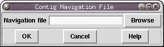
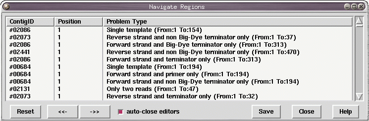

This function, which can be found under the view menu, allows the user to navigate to areas of interest within contigs. When Contig navigation is selected a dialog box is raised asking for a filename containing the regions. The format is the same as the search by file function.
See section Search by file.

The user can either enter the name of the file or browse for it using the browse button. Once ok is hit, the file is loaded into a table for viewing.

The table has three fixed headers, contigID, Position and Problem Type. Clicking on any of these cause the whole table to be sorted on that column. The regions can be viewed by either randomly double clicking on a row , by selecting a row and using the next (->>) and previous (<<-) buttons at the bottom, or by pressing the Page Up and Page Down keys. The corresponding contig editor will be opened and moved to the position indicated. Once a row has been clicked on it's background will be changed to highlight that it has been visited.
The reset button will clear the table and re-read the data from file. Auto-close editors is set on by default. It closes any un-needed editors when the user selects a region on a different contig. The Show Traces mode will automatically display some traces based on the same mechanisms used in the editors 'Auto-display Traces' option (see section Trace Display Settings). Save will save the table list, including all rows previously marked as selected, back to the file. If this file is re-read at a later stage then the table will have the same sort order and tagging as when saved.
The format of the input file is as follows:
contig_identifier position comment
If the comment contains "To:" and a number then the region
indicator at the bottom of the navigator window updates to show the
size of the element, otherwise it just has a line showing the position
of the start. Finally the comment may end in the 'nul' character to
indicate that it has already been visited. (This is utilised by the
Save command.)